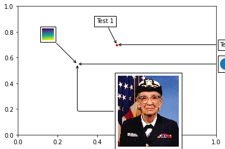

import matplotlib.pyplot as plt
import numpy as np
from matplotlib.patches import Circle
from matplotlib.offsetbox import (TextArea, DrawingArea, OffsetImage,
AnnotationBbox)
from matplotlib.cbook import get_sample_data
if 1:
fig, ax = plt.subplots()
# Define a 1st position to annotate (display it with a marker)
xy = (0.5, 0.7)
ax.plot(xy[0], xy[1], ".r")
# Annotate the 1st position with a text box ('Test 1')
offsetbox = TextArea("Test 1", minimumdescent=False)
ab = AnnotationBbox(offsetbox, xy,
xybox=(-20, 40),
xycoords='data',
boxcoords="offset points",
arrowprops=dict(arrowstyle="->"))
ax.add_artist(ab)
# Annotate the 1st position with another text box ('Test')
offsetbox = TextArea("Test", minimumdescent=False)
ab = AnnotationBbox(offsetbox, xy,
xybox=(1.02, xy[1]),
xycoords='data',
boxcoords=("axes fraction", "data"),
box_alignment=(0., 0.5),
arrowprops=dict(arrowstyle="->"))
ax.add_artist(ab)
# Define a 2nd position to annotate (don't display with a marker this time)
xy = [0.3, 0.55]
# Annotate the 2nd position with a circle patch
da = DrawingArea(20, 20, 0, 0)
p = Circle((10, 10), 10)
da.add_artist(p)
ab = AnnotationBbox(da, xy,
xybox=(1.02, xy[1]),
xycoords='data',
boxcoords=("axes fraction", "data"),
box_alignment=(0., 0.5),
arrowprops=dict(arrowstyle="->"))
ax.add_artist(ab)
# Annotate the 2nd position with an image (a generated array of pixels)
arr = np.arange(100).reshape((10, 10))
im = OffsetImage(arr, zoom=2)
im.image.axes = ax
ab = AnnotationBbox(im, xy,
xybox=(-50., 50.),
xycoords='data',
boxcoords="offset points",
pad=0.3,
arrowprops=dict(arrowstyle="->"))
ax.add_artist(ab)
# Annotate the 2nd position with another image (a Grace Hopper portrait)
fn = get_sample_data("grace_hopper.png", asfileobj=False)
arr_img = plt.imread(fn, format='png')
imagebox = OffsetImage(arr_img, zoom=0.2)
imagebox.image.axes = ax
ab = AnnotationBbox(imagebox, xy,
xybox=(120., -80.),
xycoords='data',
boxcoords="offset points",
pad=0.5,
arrowprops=dict(
arrowstyle="->",
connectionstyle="angle,angleA=0,angleB=90,rad=3")
)
ax.add_artist(ab)
# Fix the display limits to see everything
ax.set_xlim(0, 1)
ax.set_ylim(0, 1)
plt.show()
